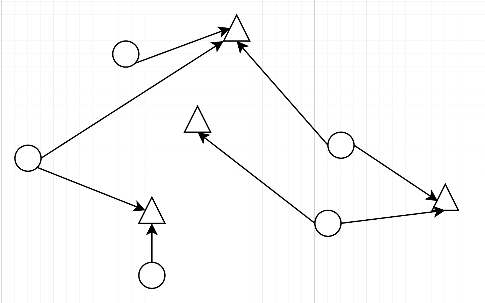
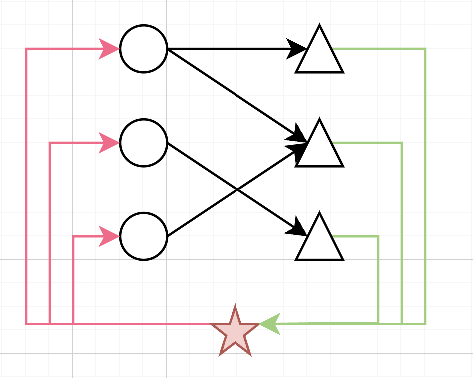

Network Flow Pt.1
Transportation Problem
Scenario. Sending supplies to stores
Suppose you own a clothing business and owns both factories and stores. Let \bigcirc be the factories (supply nodes) and \triangle be the stores (demand node). The supply system looks like a directed graph:

There’s also a unit cost to ship cloths from i to j.
{\Large\text{\textcircled{$\normalsize i$}}}\xrightarrow{\normalsize c_{ij}}{\Large\triangle}\!\!\!\!\!\!jVariables
- I
- Set of supply nodes
- J
- Set of demand nodes
- s_i
- Supply capacity of node i
- d_j
- Demand at node j
- c_{ij}
- Unit transportation cost to go from i to j
- x_{ij} Decision Variable
- Amount of items to ship from supply node i to demand node j. \forall i\in I, j\in J
Objective
We want to minimize the total shipping cost.
\min\sum_{i\in I, j\in J}c_{ij }x_{ij}\\[10pt]
\begin{aligned}
\text{subject to}&&\left\{\begin{aligned}
\forall j, \sum_i x_{ij}&\geqslant d_j && \small\text{(meets demand)}\\
\forall i, \sum_j x_{ij}&\leqslant s_i && \small\text{(within capacity)}\\
x_{ij}&\geqslant 0
\end{aligned}\right.
\end{aligned}Proposition. Integer Constraints ⇒ Integer Solutions, Existence
- If d_j, s_i\in \Z, the solution are also integers.
If the total demand is less than total supply, the the problem is feasible.
\sum_{i\in I}s_i\geqslant \sum_{j\in J} d_j
We will see that the transportation problem is a special case of the more general network flow problem.
Network Flow Problem
Given a graph G = (V, A), where V is the set of vertices, A is the set of arcs.
Define x_{ij} to be the flow on the arc i\to j.
Each node i has the flow conservation constraint
Def. Flow Conservation
For each node i,
\begin{aligned}
\text{Flow into } i &= \text{Flow out from }i\\
\sum_{(j\to i) \in A}x_{ji} &= \sum_{(i\to k) \in A}x_{ik}
\end{aligned}Objective
Minimize the total cost. c_{ij} is the unit cost to go from i\to j.
\min \sum_{(i\to j)\in A}c_{ij}x_{ij}\\
\text{subject to flow conservation}Flows could have upper and lower bounds:
l_{ij}\leqslant x_{ij}\leqslant u_{ij}Special Case: Transportation Problem
Continue from above, define the vertices to be:
V = \{\text{Supply nodes}\}\cup\{\text{Demand Nodes}\} = I\cup JSince there are only arcs from supply nodes to demand nodes, we can group everything into a bipartite graph.

where is the universal node u to maintain flow conservation.
Supply nodes only have arcs leaving them, causing negative flow.
The universal node can be thought of as the universal supplier that sends products to the supply nodes.
Demand nodes only receives flow, so they have positive flow.
The universal node can be thought of as the universal customer that buys everything.
Therefore the set of arcs A is given by:
\begin{aligned}
A ={}&\{i\to j: i\text{ is supply node}, j\text{ is demand node}\}\cup{}\\
&\{u\to i:i\text{ is supply node}\}\cup{}\\
&\{ j\to u:j\text{ is demand node}\}
\end{aligned}Decision Variables
y_i and z_j are new for this model.
- x_{ij}
- Amount of items to ship from supply node i to demand node j.
- y_i
- The flow from u to i for each supply node i
- z_j
- The from from j to u for each demand node j
Objective
Minimize the total cost.
\min\sum_{i\in I, j\in J}c_{ij}x_{ij} +\underbrace{ \sum_{i\in I}0y_i + \sum_{j\in J} 0 z_j}_0Note that the under-braced parts are 0, because we only use y_i, z_j for flow conservation. There’s no unit cost associated with arcs from or into u.
Constraints
For each supply node i, total flow out should equal to total flow in.
y_i = \sum_{j\in J}x_{ij}For each demand node j, total flow in should equal total flow out.
\sum_{i\in I}x_{ij} = z_jFor the universal node, flow out = flow in.
\sum_{j\in J}z_j = \sum_{i\in I}y_iFinally the bounds:
- x_{ij}\geqslant 0, can’t ship negative amount of products to demand nodes
- y_i\leqslant s_i, can’t go over the supply capacity
- z_j\geqslant d_j, meets demand
Together we have the transportation model.
The constraints are exactly the same as above.